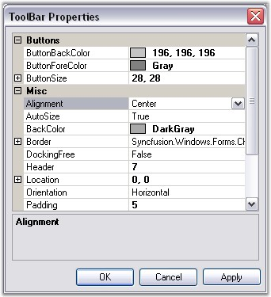

The chart control provides complete support for customizing the toolbar appearance. Use the ChartControl.ToolBar property to access the toolbar. At runtime, double-click the toolbar to show the ToolBar Properties dialog box as in the below image, which lists all the properties. For this, you need to set the ToolBar.ShowDialog property to True. If you do not want to display this dialog box, set this property to False.

Figure 297: ToolBar Properties Dialog Box
Below are the toolbar properties and their description.
|
Chart ToolBar Property |
Description |
|
Alignment |
Indicates the alignment of the toolbar. Default value is Center. |
|
Autosize |
Indicates if the toolbar can be resized automatically. Default value is true. |
|
BackColor |
Indicates back color of the toolbar. |
|
Border |
Specifies the border style. |
|
Buttons |
List of buttons to which you can add new Buttons or delete existing ones. |
|
ButtonBackColor |
Gets / sets the back color of the toolbar button. |
|
ButtonFlatStyle |
Gets / sets the flat style appearance for the toolbar button control. Default value is FlatStyle.Flat. |
|
ButtonForeColor |
Gets / sets the fore color of the toolbar button. |
|
ButtonSize |
Indicates the button size of the toolbar buttons. |
|
DockingFree |
Indicates if the toolbar is to be held docked. Default value is false. |
|
Header |
Gets / sets the height of the header. Default value 0. |
|
Location |
Gets / sets the location of the toolbar. |
|
Orientation |
Gets / sets the orientation of the toolbar. Default value is Horizontal. |
|
Position |
Gets / sets the docking position of the toolbar. Default value is ChartDock.Top. |
|
ShowBorder |
Indicates if the border of the toolbar should be shown. Default value is true. |
|
Size |
Gets / sets the size of the toolbar button. Will be used only when Autosize property is set to false. |
|
Spacing |
Gets or sets the spacing. Default value is 4. |